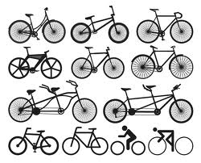
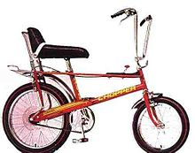
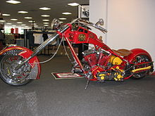
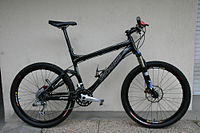
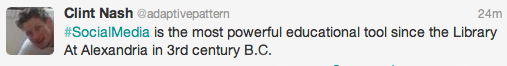
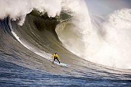
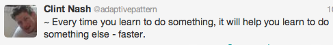
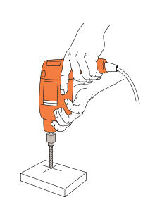

How To:
Survive & Thrive
Rapid Advancing Technologies
A little bit about me.
JavaScript ArchitectGIS for GE and TimeWarner Cable. Web Video Systems for TechStars, Dish, NFL, NBC Sports.
And some other stuff with Arduino and Music.
I love learning anything I can about the Web and everything possible about JavaScript.
How about you?
I'd like to know who you are?
What you want to know more about?
And what do you know?
How many of you ride a bike?
What kind of bike?
It is second-nature?
Well, it hasn't always been that way...
This 1809 pennyfarthing bike does not exactly excel in functional design. But then again, many emerging innovations share in this problem. Where we tend to overcome complexity... one step at a time.
In the 1890's, an improvement started a "bicycle craze"
Where the innovation was to add a gear, sprocket and chain - to the center of the frame for improved stability and safety.
We iterated upon this design for many decades...

Notably, from the turn of the century - through the 1970's...
Resulting in a vast and diverse
spectrum of "bikes".
  The "Wheelie Bike" is my favorite.
Web Technology is like this too.
- With over 166 million active websites in 2013...
- Mobile usage numbers eclipsing that of the traditional desktop...
- And an underlying Web Technology splintered into a vast and diverse spectrum.
This presents a challenge for
today's Web Developers
- Navigate the existing (vast and diverse)
Web Technology Spectrum. - While keeping up with Solutions and Best-Practices - that emerge and change randomly.
And it is accelerating...
~ Increasingly, if we are not learning each and every workday - we are at risk of falling behind.
So, this is why we are here today.
And why we must know...
How To:
Survive & Thrive
Rapid Advancing Technologies
Overview of Discussion
I. Getting Started
II. How To Survive
III. How To Thrive
First off, You've made a great choice...
Being a Web Developer is a fun job and it is tremendously rewarding.
How many of you are on social media?

Which do you use?
What do you think about this...

Might this be true?

Good answers get a sticker.
~ The educational value of Twitter is profound because, never before, have we been able to listen in to the thoughts of our top minds in real time.
This is due in large part to the Web,
to those who build it,
and by extension to everybody in this room.
~ Everything that you need to know is on the Web - our job as Web Developers - is to decipher it.
So many technologies to learn...
You might be overwhelmed - but take heart.
Many of the biggest problems are solved!
What we are generally called to do, is to reuse and improve on existing solutions.
For emerging technologies...
A light but continuous habit of knowledge ingestion.
~ Synch with the social-web and drink from the firehose.
II.
How To Survive
How many of you enjoy some of these sports:
ski, snowboard, mountain bike, rock-climb, scuba-dive, snorkel, or surf?
For a sticker... what do all of these have in common?
Initially, they can be scary, even painful, but once you gain proficiency you can become empowered.
Web Development can be like this too.
If Rapid Advancing Technologies is like a rising tide - then what you need to do is learn to surf.
~ Learn to Surf.
- Be Buoyant
- Adapt
- Ride The Wave
~ Buoyancy means...
~ Avoid becoming overly attached to any one idea. There is a good chance it will deprecate in time.
~ Get Curious.
~ Buzzword Bingo. – Write down every technical buzzword that you do not understand, and Google or Wiki it later.
~ Adapt
~ Just like learning to swim - The Web is becoming easier to learn. Anyone can do it, and there is much you can do with this skill.
~ Standard Workflow.
a) Download Example b) Double-Click HTML c) Right-Click Inspect Code.
- That is all that is required to start developing the web!
~ Leverage that Immediacy!
– Download a working example, understand why it works, then make one-off modifications.
~ Get to know DevTools well. – It will keep you above the water and later give you the ability to ride the wave.
How many know how to step-debug?
Ride The Wave!
~ As you gain aptitude
– begin to dominate the medium,
rather than let it dominate you.
~ At the very moment that you master your domain - you begin to thrive!
III.
How To Thrive
How many of you have a pet project?
How many of you would classify yourself as a natural tinkerer?
After a while, Web Development starts to become second-nature.

~ Engage in Pet Projects-.
~ Tinker with MockUps, Wireframes, and Prototypes-.
You can always Reuse that knowledge, and in the Web - you can always Reuse code.
~ Assemble an online codebase
~ Cultivate Pet-Projects into an online repository.
~ It is easy to push them to GitHub!
~ Keep them organized with a prefix: “PROJECT_...”
~ If you stick to this consistently over time - it is easy to expand your online footprint.
~ Go to the Experts...
~ Ask, then answer questions on StackOverflow.
Get an account and discover their Careers2.0 page.
~ Send a Pull Request and contribute on GitHub.
~ Attend Hack-a-thons and Meetups on Meetup.com, any others?
~ Host, Speak and give Technical Presentations. – Ask for feedback.
~Publish to the Web
- For others to see, but also for your own reuse.
~ Start a blog. – WordPress, Blogger. Who has a blog?
"Note-Blogging" - is the easy way to get started blogging. Just take notes and then publish them to your blog. Low effort, big return.
~ Deeply Understand Reuse
- This is so important.
Can you think of examples of
Reuse in HTML, CSS, and JS?
For a sticker...
~ Reuse is an Advanced Skill...
Because it allows you to start combining and fitting pieces together.
~ Once you gain aptitude in assembling pieces - and understand what you are doing - libraries and frameworks become Power Tools.
~ Power Workflow
~ Reuse, Modify, and Extend code.
~ This will amplify your code productivity (and quality) over time.

~ Combination is also advanced.
~ Roll Code Forward: Look for ways to combine your PROJECT_s.
Does anyone want to venture a guess as to why combination and iteration is so powerful?
Because iterative combination is how we innovate.
You and I... do this as a profession. And it fundamentally improves the world.
~ As you begin to thrive...
strive to understand the Extensibility of code,
the way it evolves technology,
and the power it holds.

~ And Iterate
~ Recursively loop a learning routine
every single work day.
~ Just like riding a bike or learning to swim
eventually it becomes second-nature.
~ And there is no limit to what you can accomplish.
In Closing...
~ Do these things and you will survive each successive wave of technology.
~Review these suggestions later in your career, to find yourself doing them naturally.
~ I hope these ideas free, enlighten, and empower you – to find success and thrive in today’s rapidly advancing Web Technologies.
The End!
Thank You.
~Clint Nash @adaptivepattern